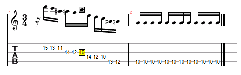
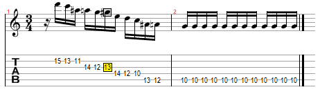
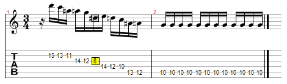
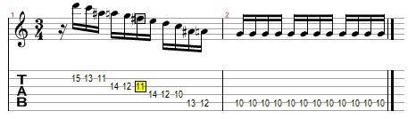

Music has consistently been an important element of all human life despite differences in technology, culture, geographic location and time in history. Each musical composition is made of seven basic notes and it is the specific sequence of these notes that gives each piece its own identity. These patterns or collections of sounds can play an active role influencing day-to-day life. Similarly, DNA is the fundamental molecule that is present across nearly all forms of life on earth. DNA strands are composed of four primary bases that can be arranged into countless permutations. The order of these building blocks comprises the unique genetic codes that determine all organism's characteristics. For both music and DNA, the modification of a single elementary unit can have significant implications. When a single musical note is out of place, the entire piece can sound awkward or “off”. Likewise, when a single DNA base at a key position along the DNA strand is replaced by another (called a point mutation), a genetic abnormality results. These genetic abnormalities have the potential to cause various diseases, and therefore, identification of these specific point mutations is of great interest.
How do we recognize that there is an altered piece of information in a given set of data? In the case of music, our brains can be trained to pick up on these errors. Some psychologists believe that once we locate a problem spot in a pattern, our brain attempts to run through several possibilities of what the pattern would be like without the irregularity. Once an appropriate substitute is found, we can confirm to ourselves that the original pattern is incorrect. This is demonstrated here using the classical music piece “Seasons” by Antonio Vivaldi. Although there is just a single out-of-place note, a non-expert can easily hear the awkwardness in the first 3 samples. As our brain scans across the pattern, it interprets one of two possible outcomes for each note in the sequence. A note can be interpreted as correct (“1”) or out-of-place (“0”). This is known as a binary output and our brain responds to it automatically whenever we perceive information as a pattern.




Unlike detecting a misplayed note, recognizing mutations in a DNA sequence requires specific tools. One challenge of detecting these mutations arises from the limited amount of genetic material available for analysis – a drop of blood only contains about an attomole (10-18 moles) of DNA. For this reason, a lot of biosensors require a signal amplification step, which most commonly utilizes enzymes and thereby requires very specific pH and temperature conditions.
For our project we have built a nanobiosensor that can identify and localize specific mutations in a DNA strand without sequence amplification. This eliminates the need for time-consuming techniques (such as polymerase chain reaction) and the requirement of sequencing an entire DNA strand to identify the mutation. We accomplished this by combining chemical cleavage of mismatch reactions and a technique called dip pen nanolithography (DPNL). The nanosensor is designed to generate a binary code for each base position along the strand of interest. This binary sequence is then interpreted to produce an unambiguous answer to whether there is a mutation at the site of interest and what the mutated base is.
This is how the nanobiosensor works. Consider a single stranded DNA (ssDNA) of a known sequence, referred to here as the “target”. For this sequence, a specific mutation at position 33 is indicative of a genetic disease, which the nanobiosensor needs to identifies. In order to achieve this, we first immobilize the “bait” strands on surface using dip pen nanolithography. The baits are fully complementary to the targets except for the point of interest. In our example it is position 33. The nucleobase in the bait strand at the point of interest is replaced with a cytosine base (C). The 3` end of the modified bait strand is functionalized with a fluorophore (ATTO488) and the 5` end with an amino group. 5’ modification allows us to chemically attach the baits to the epoxy-coated glass substrate. The baits are immobilized on surface in sub-micron dots using DPNL.
After the printing process is complete, solution containing complimentary target ssDNA is allowed to bind to the modified bait sequences in all three isles on the surface. At the tested sight of the mutation we now have 4 possible base pairings that need to be identified: C-T, C-C, C-A or C-G.
We introduce each isle to different chemicals that can cut or nick the strand at the point of interest following Chemical Cleavage of Mismatch (CCM) protocol. Based on the results of three tests we can then obtain information in the form of a binary code that is used to identify the mutation or its lack. The first isle is incubated with hydroxylamine - NH2OH which only reacts and modifies mismatched cytosine bases. This isle is then incubated with piperidine which cuts DNA sugarbone at the sight of the modified “C” base(s). As it will be shown, this test is made specifically for C-C type mismatch.
*IMAGE of dsDNA with CC mutation before and after treatment*
The second isle is introduced to hydroxylamine followed by potassium permanganate – KmnO4. Piperidine is used afterwards to cleave the sugar backbone of modified “C” or “T” bases. While NH2OH is specific to cytosine mismatched bases, KMnO4 is specific to the thymine ones. This isle is therefore used to distinguish C-T mutations.
*IMAGE of dsDNA with CT mutation before and after treatment*
Finally our last test consists of incubating the third isle with hydroxylamine followed by piperidine under elevated temperature. Heat in this test, unlike isle one, is used to de-hybridize immobilized DNA strands by first creating a nick in the sequence at the sight on mismatched cytosine base. This test is actually used to distinguish C-A and C-G base pairs.
*IMAGE of dsDNA with CA mutation before and after treatment*
Now we can obtain a unique binary code for a specific base pair present at the tested sight of the mutation:
If the base pair at the sight of the possible mutation was C-C, all of the three tests will cut the DNA strand at the point of the mutation leading the loss of fluorescence.
This result is due to the presence of hydroxylamine in all three tests. The output signal for C-C mismatch can then be read as 0-0-0.
*Vlad`s animation of CC mutation (“cc_gif” or “cc_vid”) goes here*
If the base pair in tested position 33 was C-T, the first test will only nick the DNA strand without cleaving it, yielding no loss of fluorescence = 1. Second test will cleave the strand at 33rd base resulting in the loss of fluorescence = 0. While, the last test will nick and de-hybridize the DNA strand, again, leading to the loss of fluorescence signal = 0. The output signal for C-T mismatch can be interpreted as 1-0-0.
*Vlad`s animation of CT mutation (“ct_gif” or “ct_vid”) goes here*
If the 33rd base pair was C-A, we can expect no loss of fluorescence for the first test = 1. Also, no loss of fluoresce for the second test as hydroxylamine would nick the strand at the cytosine mismatched base, but KMnO4 only selectively reacts with thymine bases and would not modify adenine, therefore the overall dsDNA with the fluorophore would stay intact = 1. The last test would lead to the loss of fluorescence through nicking and dehybridizing the DNA strand at the sight of the mutation = 0. The output signal for C-A base mismatch would read 1-1-0.
*Vlad`s animation of CA mutation (“ca_gif” or “ca_vid”) goes here*
The last possible base pair that needs identification is C-G. Since cytosine and guanine are complimentary bases, they will not form a bulge at our test sight and will be inaccessible to either hydroxylamine or KMnO4 for modification. Consequently piperidine would be unable to nick or cut the strand for any of the three tests. This means that we can expect lack of fluorescence loss for all of our CCM tests yielding an output signal of 1-1-1 for C-G base pair.
*Vlad`s animation of CG complimentary (“cg_gif” or “cg_vid”) goes here*
We have now obtained a unique binary code for each of the possible base pairs. Following the chart below we can now identify the mutation originally present in our patient`s DNA.